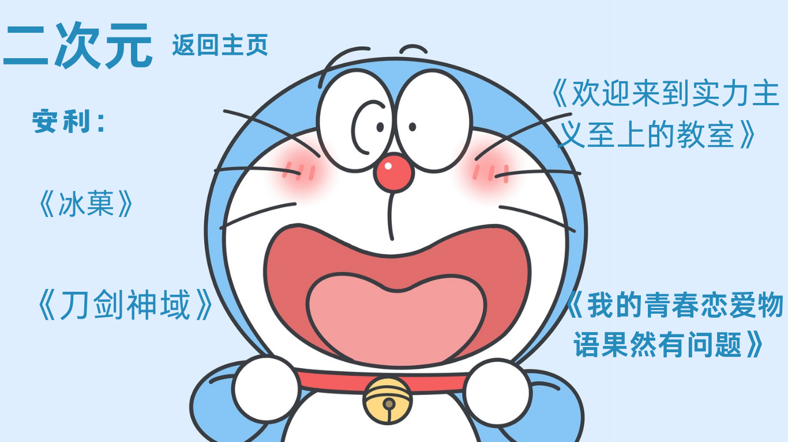

|  |
下图源于动漫《冰菓》 《冰菓》由日本神山高校古典部OB会出品，该动画改编自米泽穗信著作的系列小说《古典部系列》，故事讲述了对任何事都并不积极的高校生折木奉太郎，在加入神山高校的古典部后，与伙伴们共同揭露三十三年前社长突然逃学的谜团的故事。 在众多将要展开“玫瑰色”生活的高中生之中，本作的男主角折木奉太郎却是一个“灰色”的节能主义者。凡是没必要的事就不做，因为不想后悔，被人说是疏离、厌世也无所谓，因为这就是他的作风。这样的折木奉太郎，却因为姐姐的命令而进入了濒临废社的“古籍研究社”。研究社虽然好不容易招到了四名新社员，但却又卷入了四十五年前社长突然肄业的谜团之中。在探秘的过程中与女主千反田爱瑠逐渐产生淡雅而馥郁的玫瑰色情感。
|
下图源于《我的青春恋爱物语果然有问题》 《我的青春恋爱物语果然有问题》由日本轻小说家渡航著作 高中生八幡生不屈服于孤独，没有半个朋友，更不用提女朋友。自言自语道“现充给我爆炸吧”。未来的梦想是要当“啃老族”——这样一个家伙被带去加入校花雪乃的“侍奉社”。周围又有外表有些bitch的由比滨结衣以及天使一般的户冢彩加，这怎么想都是恋爱喜剧的展开，然而，这是一个充满错误的青春，随着“地表最强学妹”一色伊吕波的加入，又会看到八幡、雪乃、结衣的关系有怎样的变化
|
小编看过的动漫神作不计其数，但仅仅罗列部分让小编回味的部分来分享，倘若不喜，切莫踩喷，希望共同守护这些哲理与细腻情感共存的清流。 |